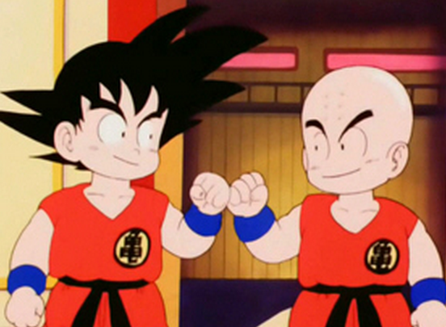
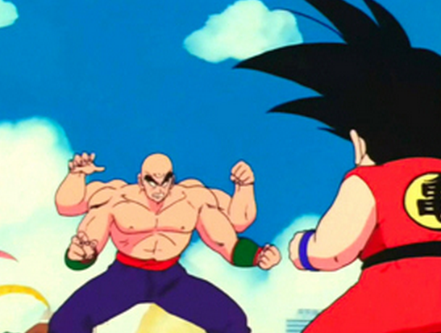

Després es celebra el 22è Torneig de les Arts marcials, on resulta que en Ten Xin Han i en Xaos també participen. Ells dos resulten ser alumnes del gran rival del Follet tortuga: El Corb negre . Durant el transcurs del torneig descobreixen que en Tao Pai Pai, vençut per en Goku a la Torre Sagrada, era el germà del Corb negre . Aquest vol venjar-se mitjançant els seus alumnes.
|  |  |
Però en Krilin consegueix guanyar en Xaos en combat. I en Follet tortuga s'enfrenta a en Ten Xin Han i intenta convènce'l de que es passi al camí del bé. Finalment es retira, per tal que en Ten Xin Han s'enfronti amb en Goku i així doncs aquest s'enfronta en una gran final molt igualada plena de tècniques espectaculars. En Ten Xin Han vença a en Goku, però per una pura qüestió de sort.